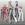

|

Lord Strife
Author of 5 Stories |
Sun and Space:
Lord Strife (bishop_)
'xxx' – Thoughts
{xxx} – Panda Signs
Version 1.0
Chapter 1
~ Juuban Downtown, Juuban Ward ~
"BURNING MANDALA!"
"SPARKLING WAVE PRESSURE!"
The youma, a cross between a humanoid and a rhino, was struck head on by the magical attack and was sent hurling against a brick wall.
Sailor Jupiter and Sailor Mars stood together a short distance from where the youma was lying. Sailor Venus, Sailor Mercury and Sailor Moon landed near their fellow senshi.
"Did we get it?" asked Sailor Jupiter.
A loud roar answered her question, as the youma stood up from the rubble. The youma had that murderous gleam in its eyes as it charged the assembled sailor senshi.
"SCATTER!" Sailor Mars shouted and all but Sailor Moon jumped right out of the path of the charging youma.
"WAAHHH!" Sailor Moon cried as she was panicking. The youma was barreling in towards her and she was too frightened (or too much of a ditz) to run.
"SAILOR MOON!" everyone shouted, as they saw the youma was upon their princess.
Sailor Moon closed her eyes, and awaited the pain that was to follow. It was a few more seconds that she heard a loud crash beneath her…then it registers to her that she was…flying? No, someone was carrying her. She looked-up and saw Tuxedo Kamen smiling at her.
"You alright Sailor Moon?" asked Tuxedo Kamen with a note of worry in his voice.
"I am now." Sailor Moon had those hearts in her eyes as she said this. The two of them landed near the others.
"Sailor Moon you clumsy oaf! Why didn't you dodge! If Tuxedo Kamen didn't show-up you might have been Sailor Burger by now!" Sailor Mars berated the other senshi. Though she would deny it, she had been worried of Sailor Moon's safety.
"I'm sorry! I'm sorry! I'm sorry!" Sailor Moon cried.
Sailor Mercury stepped up next to Sailor Moon and comforted her a little. "Its okay Sailor Moon…at least you're alright. For the moment we should focus first on the youma."
As Sailor Mercury said this, the attention of everyone turned to the said youma. Apparently it was charging again, horn first.
"WORLD SHAKING!"
A magical energy ripped through the ground and slammed into the youma drastically altering its course and crashed into the side of a building.
Everyone turned towards the source of the attack and saw three of the outer senshi running towards them.
Sailor Uranus was the first to reach the inner senshi. "Princess! Sorry we're late!"
Sailor Neptune and Sailor Saturn stopped and stood next to Sailor Saturn. They were about to offer their own apologies when Sailor Mars cut them off.
"Save the excuse for later! Right now we need to stop that youma!" Sailor Mars said indignantly.
Senshi then plus one Tuxedo Kamen, jumped to attack as the youma was beginning to stand from the rubble.
"VENUS LOVE ME CHAIN!"
"SHABON SPRAY FREEZING!"
"BURNING MANDALA!"
"SPARKLING WAVE PRESSURE!"
"WORLD SHAKING!"
"DEEP SUBMERGE!"
"SILENCE GLAIVE SURPRISE!"
A magical barrage, plus a rose (O_o), struck the youma causing it to fall to its knees, and badly battered but not out.
Tuxedo Kamen called out to Sailor Moon "Finish Him now Sailor Moon!"
Sailor Moon nodded, "MOON SPIRAL HEART ATTACK!"
The youma roared in pain as it was reduced to ash, collecting a sign of relief from all the senshi present.
"Great job everyone!" Sailor Moon declared happily as she grabbed onto Tuxedo Kamen's arm.
A beeping sound from Sailor Mercury's computer startled everyone from their reverie. And Sailor Mercury immediately checked what the cause of the alert was, and gasped on what she found out.
"Girls! There are several more youma having the same power reading as the one we defeated just now that are rampaging the Juuban Park!" Sailor Mercury said alarmingly.
"Come on! We have no time to loose!" said Sailor Jupiter as she ran towards the park and was immediately followed by the others.
Sailor Moon trailed the rest of them and grumbled something like, 'It's gonna be a looooong night.'
A soon as the senshi were away three figures emerged from the shadows.
"So those are the reincarnated senshi that defeated Beryl?" asked the first.
"Yes…but they seem to be lacking a few more heads." Said the second.
The third had a thoughtful look and replied, "I'm sure we may soon see the others turn out as well, for the moment we need to gather data on the strengths and capabilities of these senshi. We will not end up like that idiot Beryl."
The other two nodded and melted into the shadows once again, heading towards the park to gather more information on their much hated enemies.
~ The next day, Juuban Station ~
The train's onboard speakers cracked to life, "Approaching Juuban Station. I repeat, approaching Juuban Station."
Nodoka looked towards her two companions and shook them awake. "Come on you two, we're here."
Ranma and Akane took time to get the sleep out of their eyes, before they stood up and gather their belongings.
"Your cousin, Rei, will be meeting us on the station. I'm sure you're eager to see her again, after all it has been more than ten years since you last saw each other!"
"I can't even remember what her face looked like, mom…"
"Don't worry about it too much dear. It will come back to you once you see her."
Akane stepped up beside Ranma. "Won't we be trouble at all Auntie Saotome?"
"Not at all dear. Actually father, your grandfather Ranma mind you, was more than happy to take you two in."
The train's speakers again cracked up, "Juuban Station. All departing passengers are sure to check all your belongings before disembarking the train."
Nodoka signal the two to follow her as they disembark the train.
Rei was standing on the platform waiting for her aunt and cousin, and her cousin's fiancée to arrive. Waiting with her is her friends Usagi, Ami, Minako and Makoto. Thankfully Nodoka already explained, to Rei, Ranma's ailurophobia so Rei had Usagi and Minako leave Luna and Artemis behind.
"So Rei is your cousin cute?" Minako chirped in.
"I hope he looks like my former boyfriend!" Makoto added.
Rei looked at her friends and sighed, "Didn't I tell you girls already?"
"Tell us what, Mako-chan?" asked the curious Usagi. Though she already had a boyfriend she couldn't help but be curious.
Ami without looking up from her book answered for Rei, "Rei's cousin already has a fiancée and she is coming along with him."
"At least somebody was listening to me." Rei said half-heartedly.
The station speakers cracked to life indicating the train has arrived.
People began disembarking the train, Rei was straining to keep a look-out for her aunt and cousin…well at least for her aunt. She hasn't seen her cousin all these years and she can't even remember his face, so instead she looked for her aunt.
Rei was pre-occupied at looking at the train and the disembarking people when she accidentally bumped into someone. She let out a shriek as she stumbled backwards.
Before she fell on the floor, a strong hand grabbed onto her waists preventing her from hitting the pavement below.
"Are you alright Miss?" The man asked her.
Rei turned around and saw quite a cute and hunk of man holding her waist.
"Rei! Is that you?" called a voice from behind the man.
Rei immediately regained her balance as she stood and saw that it was her aunt that called out her name. The man casually dropped his arm and stood next to her aunt.
"Auntie Nodoka!" Rei happily called to her aunt.
"It's so good to see you again Rei. I see you have met your cousin!" Nodoka said as she turned to look at her son nodding approvingly.
'Cousin?' Rei thought, and then she turned to regard the man that she bumped into earlier. "You're Ranma?"
Ranma gave a sheepish nod. 'Damn!' was all Rei could think. 'And I thought I found mister perfect…*sigh*' Regaining her composure, Rei gave her cousin a smile and a hug and said, "Hi Ranma, it's been a long time!"
"Yeah it has. Let me introduce you to my fiancée." Ranma said.
Rei didn't notice the girl before but she was standing beside Ranma. 'Huh? Was she there earlier?'
"Rei, this is my fiancée Tendo Akane. Akane meet my cousin Rei!" Ranma said introducing the two girls.
"Hello I'm Hino Rei, nice to meet you!" Rei bowed as she greeted Akane.
"Pleasure is mine." Akane returned the greeting and bow.
Rei then saw her friends walking towards them.
"Girls, this is my cousin Saotome Ranma and his fiancée Tendo Akane." The two bowed to Rei's friends in acknowledgement. "Ranma, Akane, I like you two to meet my friends. This is Makoto; she's also a martial artist you know!" Rei said while pointing at the brunette with a pony-tail.
"Hi!" Makoto greeted, but added silently 'Man, why are all the good ones taken!'
Rei continued, "This ditz here is Usagi!"
"I'm not a ditz Rei! That was mean!" Usagi was at the verge of tears.
"Now, now Rei! You shouldn't tease your friends like that!" Nodoka said lecturing her niece.
"But it's true…anyway the other blond is Minako." Rei gestures to the blond girl standing beside Usagi.
"Hello, nice to meet you!" Minako chirped happily.
"And the last is…" before Rei could continue she was interrupted by a sudden out burst from Akane.
"Ami! Is that you?" Akane suddenly asked, cutting off Rei's introduction.
Ami looked-up from her book and immediately recognized the girl who called her name. "Akane!" Ami then happily hugged Akane much to surprise of everyone else.
"Uh...you know her Akane?" Ranma asked inquisitively.
"Yes, Ranma. She's my cousin! Her mother and my father are siblings you see." Akane said happily.
"Well, I do see the resemblance though." Ranma said while looking at the two cousins.
"Now that you mention it…they do look alike." Rei said as she also made a casual look over Ami and Akane.
"Come on children. Let's continue this conversation over at the Hikawa Shrine." Nodoka said as she gestures for everyone to follow her outside the platform.
Ranma and Akane were immediately beside Nodoka while Rei and Ami walked up next to them. Rei and Ami both wanted to get re-acquainted with their respective cousins, while Usagi and the rest trailed them.
"Wow, I never thought Rei's cousin was such a hunk!" Minako said as she made a look-over at Ranma's body.
Makoto nodded but sighed, "Well unfortunately he's already taken. By Ami's cousin no less."
"I wish Mamoru was here with us today." Usagi said sadly but suddenly brightened-up. "At least we get to meet new friends today!"
The group walked together outside the station, and headed for the bus stop.
"So you two will be transferring to Juuban High for the mean time?" Ami asked her cousin.
"Yeah. It will help Ranma and I get away from the madness of Nerima."
Rei was talking with Ranma when they overhear Akane and Ami's talk.
"By the way Ranma now that Akane and Ami brought it up…" Rei began "Is it true that there are a lot of weird things happening in Nerima? Like over-powered martial artists and the like?"
"Uh…yeah, it's true Rei."
Makoto decided to join the conversation since martial arts have been brought in as a topic. "Wow! So it is true there are _really_ good martial artists in Nerima! I better go see one of these days!"
"You don't need to dear." Nodoka said, and continued "My son is the best of the lot back in Nerima."
All the girls, minus Akane, dropped their jaws.
"Re-really?" Minako asked, while she adjusted her first estimate of the specimen before her eyes.
Ranma fidgeted a little to the attention but nodded his head as a sign of affirmation.
"And he has the biggest ego also of the lot." added Akane.
"HEY!"
"Now, Akane dear. You shouldn't say that to your fiancée. But…I have to agree with you there." Nodoka smiling towards Ranma.
"MOM!"
"Sorry dear."
Rei has read some magazines regarding the martial artists of Nerima. She read that whenever there was a fight, huge property damage usually follows. So much more than the damage done when youmas attack, which she found totally unbelievable. She also read that some of these people could do ki attacks…
'Hmm…I wonder if Ranma could do ki attacks? I better ask then…'
"Hey, Ranma!"
"What is it Rei?'
"I read from some magazines that some of those people could do ki-based attacks. Are you one of those?" Rei asked casually.
"Hey, I read about it too! Though I was skeptical if it were possible." Makoto added.
"Feh! It's quite possible alright. All you need is lots of training. Here let me show you." Ranma lifted his hand, palm up and no sooner has he done this a ball of ki materialize above his palm.
Aside from Akane and Nodoka, the girls' jaws dropped again at the sight which they deemed impossible.
Ami and Rei were the most curious of the bunch. Rei was thinking along the lines of how it could help her in her fire readings, while Ami was looking for _practical_ applications of it and of course, the know-how behind it as well.
"Let's continue this little talk at the shrine, the bus is here." Minako pointed at the approaching bus.
~ Time Gate ~
Sailor Pluto, the ever vigilant guardian time, was looking over the timelines at double…no triple effort to determine the source of the ripple she felt earlier.
'What was that I felt earlier?' She thought while she was looking at the gate before her with the fluctuating vision of Crystal Tokyo. 'The future has become unstable…why?' She tried all the techniques, methods, ways she knew to determine the source, yet could not pinpoint the exact cause.
'Who or what is this new enemy that could masked its' presence even before the gates of time?' She pondered. Now she could see before her two probable futures: one is of Crystal Tokyo…the other, something not even she could describe.
'I must discuss this with the scouts! The future we all long for is at stake!'
She took one more glance at the time gate before she left to talk to the scouts. If she left a little later she would have seen the figure resolve into an enemy she thought was long since dead.
~ Hikawa Shrine ~
"Since the two of you are not yet married, we decided to prepare two guess rooms for the both of you. We don't want you to do anything improper so long as you're within temple grounds." Rei said with a silly grin on her face.
Both Ranma and Akane's faces are flushed at Rei's comment.
Ranma decided to change topic, "Err…Rei I think I'll be going out for awhile…you know…get to know the town more."
"I…uh…think I'll go with Ranma…too keep him out of trouble!" Akane said.
"HEY!"
"We could give you two a little tour if you like." Usagi volunteered.
"Well, I would like to continue my talk with my cousin so if you two don't mind I think I'll tag along as well." Ami added.
"Uh…sure. No problem." Ranma replied.
'You better not be hitting on my cousin pervert!' Akane added to herself. She also wondered why she felt a pang of jealousy, after all her cousin wouldn't dare take Ranma…would she?
"I know an ice cream parlor near here! Why don't we go there?" Minako asked.
Usagi's smile brightened at the mere mention of ice cream. "YAY! Ice cream!"
Nodoka then appeared on the hallway. "I see you young ones are going out? Be sure to be back before dinner then."
"Okay mom."
~ Juuban Mall ~
A young _couple_ was walking hand-in-hand in the mall. They were trailing their young _daughter_ as she gleefully jumped from one window to another…window shopping if you will.
"HEY! HARUKA! MICHIRU! HOTARU!" a voice called out from behind them.
All three turned to see a running and enthusiastic Usagi, waving at them. They could also see the other inners walking towards them with a couple that looked familiar to them somehow.
"Usagi-chan!" Hotaru called out as she hugged the elder girl. "What are you doing here? Are you window shopping too?"
"Hello, Usagi." Haruka greeted her future ruler.
"Hi Haruka! Michiru! Actually we're giving our friends a little tour. Oh! That reminds me!" Usagi grabs Hotaru's hand. "Come on! Let me introduce you to them!"
Usagi half-dragged Hotaru while Haruka and Michiru followed the two at their own pace.
Usagi places both her hands on Hotaru's shoulders as she addresses Ranma and Akane, "I would like you two to meet Tomoe Hotaru. She's also one of our best friends. And these two lovely ladies with her are her guardians…the blonde is Ten'ou Haruka and the other is Kaiou Michiru."
'I thought _she_ was a _he_? Oh well…she's kinda like Ucchan then.' Ranma thought. "Hi! I'm Rei's cousin, Saotome Ranma. And this is my fiancée…"
'Wow! Ranma acknowledged me as his fiancée!' Akane smiled, inwardly. "And I'm Ami's cousin, Tendo Akane. Please to meet you!"
"Please to meet you too!" Hotaru smiled while she bowed.
"Never knew Rei had a cousin…but Ami's cousin is a dead ringer for a twin eh Michiru?"
"Yeah…the resemblance is uncanny!"
Haruka then studied the two, wondering why they looked vaguely familiar, and then it registers to her, "AH! Now I remember!"
"Remember what Haruka?" asked Michiru. The others look at Haruka as if gesturing to continue.
"The reason why you two looked familiar…I saw your pictures in the monthly Martial Artists of Japan magazine!"
Michiru then look at the Ranma and Akane much more closely then recognition also settles in, "You're right! YOU are that Saotome Ranma and Tendo Akane!"
"Magazine? But I do not remember posing…for…any…magazine…" It dawns on Ranma just how the said magazine got his and Akane's picture. He turns to regard Akane and sees that she too has reached the same conclusion.
"Nabiki!" the both of them chorused.
Hotaru was shyly stealing glances at Ranma, she had a little crush on the said martial artist and here she was meeting him personally.
Further musings were interrupted when a wall suddenly blew inward revealing five youmas.
"What the heck are those?" Ranma asked casually as if seeing a youma was normal.
"Oh my god! Those are youmas!" Usagi cried. "We better go take refuge! I'm sure the scouts would come and deal with those!"
"Who are the scouts?" Ranma asked, and the others face faulted (yes even Akane).
Usagi recovered first, "They're the pretty soldiers of love and justice you know!"
Just then, the youmas began to siphon energy from the people they managed to catch.
Ranma decided to act, "I'll deal with them…you girls take cover!"
Akane fumed, 'No way I'm letting him out of my sight! From what I saw in the news, the senshi are scantly clad and I'm NOT leaving that pervert alone with scantly clad women!' Akane turned her attention to the others, "I'll go help Ranma. You girls go ahead!"
Ami and Rei both ran simultaneously towards a private place to transform. Martial artists or not, they're not letting their cousins alone to fight those youmas alone! The others followed suite.
"KACHU TENSHIN AMAGURIKEN!"
A volley of hundred punches struck the youma nearest Ranma, freeing the person the thing was draining.
"RANMA!"
Ranma turned to see Akane coming up next to him.
'Great! The tomboy decided to help…oh well…' Ranma sighed, "Akane I'll try and distract those things while you help those people get away!" Without waiting for her response, Ranma jumped back into the fray and kicked the youma he hit earlier towards a wall.
Akane did not hesitate to rush forward to get the person as far away and fast as possible from the youma as she can.
The other four youmas stopped what they were doing and began to advance on the little human that literally kick the butt of their comrade.
"Halt!" a voice commanded.
Ranma and Akane plus the youmas all turned their head to regard the source of the voice.
"Malls are for people to enjoy themselves! You have no right to endanger the people and destroy their happiness! We are the pretty soldiers: Sailor Moon!"
"Sailor Mercury"
"Sailor Mars"
"Sailor Jupiter"
"Sailor Venus"
"Sailor Uranus"
"Sailor Neptune"
"Sailor Saturn"
"Sailor Pluto"
All the scouts turned their heads towards the ever mysterious Sailor Pluto with a look of shock and disbelief.
"What? Can't I do that little pose too?"
Err…right…We the Sailor Senshi shall punish you in the name of the moon!"
With that the nine women dressed in sailor fuku jumped into the fray.
'Those are the ones that handle these youmas? You have got to be kidding me!' Ranma said to himself.
'Darn! Those senshi DO wear scantly clad fukus! The pervert must be having a field day!' Akane fumed to herself.
The youma that Ranma knocked down stood up from the ruble and joined its' brethren as it prepares to engage the senshi.
Ranma noticed that the youmas have now changed their priority of target 'Hey! Damn things are ignoring me!'
"MOKO TAKABISHA!"
A ball of ki launched from Ranma's hand and hit one of the youma dead center, creating a gaping hole. The youma then dissolved into nothingness.
"That will teach you to ignore me!"
The senshi were dumbstruck! They fought this kind of youma before and took almost every one of them to kill one! And yet Ranma killed a youma without even breaking a sweat!
Sailor Pluto too was shocked (hey, she can't know everything!), 'How did he do that? No human could have such power!'
The remaining youma now regarded Ranma as its biggest threat. If a human could kill one of them in an instant then better kill that human before it kills all of them.
"ROOOAAARRR!"
All four youmas attacked simultaneously. Ranma just dodged, for him the youmas' attacks were to slow to even hit him.
"MOKO TAKABISHA!"
Ranma launched another ki attack and hit another youma in the head. The head was instantly incinerated while and remainder of it's' body dissolved much more slowly.
"MOON SPIRAL HEART ATTACK!"
Ranma turned to see one of the senshi launch her own attack while the youma were pre-occupied with the recent death of one of their brethren.
Two of the remaining three youma were caught in the attack and were instantly killed. The remaining youma tried to retreat but was immediately surrounded by the senshi and dealt with accordingly.
"Heck that was too easy! Ryoga last far longer than these things!"
"BEHIND YOU!" Sailor Mars shouted towards Ranma.
Ranma barely had time to look when he was struck hard at the face and sent flying towards an unbroken wall.
"RANMA!" Akane yelled as she ran towards were Ranma has fallen.
"Saturn, go see how Ranma is." Sailor Mars said to the younger senshi.
Saturn nodded and went to check on Ranma. The remaining senshi turned to regard the newly arrived enemy.
"Ah! I see that the senshi are all here!" the man said. The said man was wearing black armor, with a crest of an eagle on his breast plate. The armor covered his entire body. It was hard to believe that a person could move under such heavy armor but the man did and he did so fluidly.
"Aquilae!" Sailor Pluto was shocked to see him of all people.
"Ah! Sailor Pluto, how good of you to remember me!"
"Who is he Pluto?" Uranus asked while she readied herself in a fighting stance.
"He is one of the seven Obsidian Knights of Queen Metallia." Replied the senshi of time.
"Yes that I am. But we're six now, since you killed that idiot Beryl already…oh and Queen Metallia sends her regards to the inners." He said with a smirk.
The inner senshi were shocked. They had thought Metallia was dead but from what this man was saying, she was very much alive.
"We needed to take a little energy now and then since the injuries you gave her has not yet completely healed…and yours will suffice quite nicely!", without another word Aquilae launch himself into the attack.
"DEATH RAY!"
A dark energy materialized and jetted towards the gather senshi.
"Everyone take cover!" Sailor Mercury shouted.
While Aquilae was battling the other senshi, Saturn was kneeling besides Ranma healing him of his injuries.
"Ouch! Man that creep sure packs a punch! Much more so than Ryoga!" Ranma said nonchalantly.
"I'd say. You usually just shrugged off when you get hit." Akane added but was eyeing Saturn closely, making sure Ranma doesn't add anyone anymore to his _fiancée_ collection.
"There all better! I'd better go and help the others." Saturn stood and ran towards where the other senshi were.
"She's cute!" Akane said, trying to provoke Ranma.
"Whatever Lithea."
"!"
"!"
"Ra-Ranma what did you call me?"
"Err…didn't I say Akane?" Ranma said hopefully, 'Oh man! I must have hit my head too much…I just called her by another girl's name…but is seems right?'
'He called me by another name…I mean…I should be angry but…how come it felt right?' Akane thought to herself, when a name suddenly pops into her head. "Arthel?"
If it were possible Ranma froze even more. 'She called me…Arthel…who's Arthel? It ain't my name but…how come it feels it does?'
'Why the hell did I say that? But if felt as if was his name…'
"DEAD SCREAM!"
The two were shook from their reverie by the attack and turned their attention back towards the battle.
They saw Sailor Pluto launch her attack towards the man in Obsidian Armor, noting that Sailor Jupiter and Sailor Neptune were out of commission as they were being healed by Saturn.
'How come there was a feeling of familiarity?' Ranma and Akane both thought, and then 'Why the hell am I thinking this way?'
"BURNING MANDALA!"
"WORLD SHAKING!"
Aquilae just grinned and countered the attack with his own, "DEATH RAY!"
The two incoming attacks were quickly nullified.
"Ha! Is that the best you sen…" Before Aquilae could finish his retort, Pluto launched an attack that he barely dodged. The _Dead Scream_ grazed his obsidian armor clipping off the left shoulder guard.
"DAMN YOU PLUTO!"
"DEAD SCREAM!"
Another magic attack was launched towards Aquilae, this time he was ready for it and dodged accordingly.
"DEATH RAY!"
"CRESCENT BEAM!"
The last minute shot of Venus managed to hit Aquilae straight at his firing hand and managed to change the direction of his projectile. Unfortunately, Sailor Moon was in the new flight path.
"SAILOR MOON! LOOK OUT!"
Ranma and Akane turned pale at the sight, and both uttered a single word together, "Princess!"
Suddenly, a wave of memories flooded both Ranma and Akane, memories of time long past, memories of the Silver Millennium.
"SAILOR MOON!" Sailor Pluto shouted as fear gripped her heart as she knew her princess will not have enough time to dodge the blast.
The others were shouting the same, and Sailor Uranus was basically trying to run towards her princess.
"NULL VORTEX!"
A wave of energy suddenly cut through the incoming projectile, detonating it short from were Sailor Moon was.
"Princess! Are you alright?" asked a man wearing armor similar to the design of that of Endymion but of a different color (dark blue and black with a deep blue cape) and having a sigil of an upside down triangle engraved at the crest of the left shoulder guard.
"VESTA! Is the princess alright?" another person appeared, this time it's a girl wearing the same style fuku as the other senshi but of another color: she had bright red skirt, brighter than that of Mars; had white gloves up to her elbow; the ribbon on her fuku is yellow, and her boots were of deep red and reaches her knees.
The senshi, especially Pluto, were stunned. There was another senshi and a knight similar to Endymion!
'They…they're alive! By all the gods…they're alive!' was echoing inside Pluto's head.
Aquilae took the moment to look at the new arrivals. Recognition settles in his brows. "Sailor Sun and Sailor Vesta!" he spat out the names.
"Aquilae! How dare you attack the Princess Serenity! In the name of the moon! We will punish you!" Sun took a pose similar to the senshi and leapt to attack.
"Take care of the princess! We'll deal with that moron!" Vesta said before he joined Sun in the battle.
"SOLAR FLARE!"
"NULL VORTEX!"
"They're alive!" this time Pluto said it out loud.
Sailor Moon turned to Pluto and asked, "You know them Pluto?"
"Yes. We'll talk about it later…right now we should help them!"
On cue, the senshi minus Jupiter, Neptune (who are still injured) and Saturn (as she was healing them), leapt to join the two newly awakened senshi.
"DEAD SCREAM!"
"SHABON SPRAY FREEZING!"
"BURNING MANDALA!"
"VENUS LOVE ME CHAIN!"
"NULL VORTEX!"
"SOLAR FLARE!"
Aquilae jumped to avoid the attacks only to be hit by a World Shaking of Uranus and thrown back against a wall.
"Damn…you win this round senshi…but I WILL be back!" Aquilae sank into the ground as he teleported away from the battle.
After making sure that Aquilae was gone, the scouts turned to the two newly awakened senshi with peeked interest.
"Wow! A male senshi! I never thought it possible!" Venus declared as she took a good look at Vesta.
"Uh...I think we need to go Sun!"
Sun took a glance at her companion, seeing him fidget under the scrutinizing glance of Venus, nodded.
"WAIT!" Sailor Pluto shouted.
"See you around Pluto!" Vesta raised his hands and out came his Space Staff and tapped the ground once and he and Sun immediately teleported away.
"He could teleport?" asked a bewildered Mercury.
"What the? Party's over? And I wanted to pay that creep for hitting over the wall!" Ranma said as he ran towards where the scouts were followed by Akane.
Akane came to stop beside Ranma and said, "Forget about him Ranma! We better go see if our cousins and their friends are alright!"
"Oh yeah! Hey, if you girls go see that jerk again call me! I want a little pay back! Come on Akane let's go look for them!"
As soon as Ranma and Akane were out of hearing distance, Mercury spoke up. "We better de-transform before those two worry about us…and we need to talk regarding those two new senshi!"
Rei nodded then added, "I'll do a fire-reading to see if I can come up with something!"
Moon then stepped up next to Pluto, "And you better tell us what you know Pluto!"
"I will. Besides there is also another matter I needed to talk to you. And it may be related to the return of Metallia and her Obsidian Knights. Let's meet up Hikawa Shrine later." Pluto replied.
Mars shook her head, "Ranma and Akane are staying wit me at the shrine. I don't think it would be an ideal place at the moment."
"Then we meet at Haruka's apartment. In any event, I'll see you all later. And better go see to your cousins."
Momentarily, as soon as Ranma and Akane were out of hearing distance, Akane turned to Ranma and asked, "You think they bought it?"
"I think so. Right now I think its better that we try and piece together what we know before we go confront Pluto."
"Yeah…she tends to go overboard." Akane agreed, and then smiled at her fiancé. "I guess…we got what we wished for eh Arthel?"
Ranma smiled too. "Yeah, Lithea. A second chance." He then lowered his face to meet hers and then their lips touched in gentle and passionate kiss.
Akane then broke the kiss smiling. "I guess we better go find our friends before they worry."
"I don't think so."
"Huh? What do you mean?"
"They're the senshi. I kind of thought their auras were familiar but as I studied it more, it resembled Rei and Ami and their friends!"
"Wow! So…I guess we keep it a secret for the moment?"
"Yeah. And it would be fun to tease Pluto around a little…you know…"
"Uh-hmm…but I find more interesting to tease you, love!"
"Come on, as soon as they de-transform we'll meet up with them."
On cue, Ranma and Akane met up with Rei and the others minus Pluto as she headed back into the time gates.
To be continued…
Author's Note:
Hmm…so much for deep plots…oh well…

|
Review this Chapter |